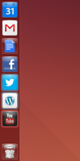
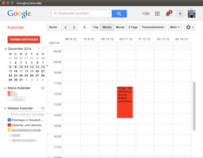

Web Apps
Dieser Artikel wurde für die folgenden Ubuntu-Versionen getestet:
Ubuntu 14.04 Trusty Tahr
Zum Verständnis dieses Artikels sind folgende Seiten hilfreich:
Web Apps  sind Erweiterungen, die Webanwendungen wie lokal installierte Anwendungen in den Unity-Desktop integrieren. Über eine zusätzliche Schnittstelle können diese Webanwendungen so theoretisch Zugriff auf das Head-Up-Display, das Unity-Startmenü sowie das Panel mitsamt Indikatoren erhalten, um mit dem Benutzer zu interagieren.
sind Erweiterungen, die Webanwendungen wie lokal installierte Anwendungen in den Unity-Desktop integrieren. Über eine zusätzliche Schnittstelle können diese Webanwendungen so theoretisch Zugriff auf das Head-Up-Display, das Unity-Startmenü sowie das Panel mitsamt Indikatoren erhalten, um mit dem Benutzer zu interagieren.
Grundlage der mit Ubuntu 13.04 eingeführten und kontinuierlich erweiterten Web Apps ist inzwischen nicht mehr Firefox, sondern die Browser-Engine aus dem Chromium-Projekt, die intern als Oxide bezeichnet wird.
Web Apps lassen sich für die verschiedensten Internetdienste finden, sowohl für Spiele, Nachrichtenseiten, soziale Netzwerke sowie Chat- und E-Mail-Dienste. Eine kleine Übersicht möglicher Web Apps für Internetanwendungen, die jedoch nicht vollständig ist:
|  |  |
| Symbole im Unity-Startmenü | Google-Kalender als Web App |
Amazon Cloud Reader
BBC News
Cut the rope
DeviantArt
GMail
Google+
Facebook
Twitter
Wordpress
Yahoo! Mail
Youtube
Windows Live Mail
Spätestens mit der Veröffentlichung von Ubuntu 16.04 spielen Web Apps keine Rolle mehr. Ihre Zukunft ist also mehr als ungewiss.
Installation¶
Passende Web Apps findet man z.B. im Ubuntu Apps Directory unter dem Stichwort:
Diese können auch direkt über das Software-Center installieren werden [1]. Die Programme erstellen automatisch ein Symbol in der Unity-Leiste am linken Bildschirmrand und können darüber sofort gestartet werden [2].
Nutzen¶
Web Apps können von ihrem Leistungsumfang mit traditionellen Lesezeichen im Browser verglichen werden. Sie unterscheiden sich lediglich im Aussehen, da sie wie ein normales Programm über ein Symbol gestartet werden und in einer eigenen Browserinstanz laufen. Da sie keine eigenständigen Programme sind, ergeben sich bisweilen Probleme bei der Nutzung (kein Drag'n'Drop, usw.). Eine tiefere Einbindung in das System ist jedoch geplant.
Aufruf von der Kommandozeile aus¶
Die Web Apps können vom Terminal aus mit
webapp-container URL
gestartet werden. Mögliche Kommandozeilenparameter sind unter anderem
| Parameter | Beschreibung |
--enable-back-forward | Vor- und Zurück-Schaltflächen anzeigen |
--enable-addressbar | Anzeige der Adresszeile |
Nähere Informationen zum Aufruf über die Kommandozeile: Ubuntu Developer Webapps Guide .
Problembehebung¶
Twitter¶
Das Paket unity-webapps-twitter steht – trotz anders lautender Informationen des Ubuntu Apps Directory – auch für Ubuntu 14.04 zur Verfügung.
- Erstellt mit Inyoka
-
 2004 – 2017 ubuntuusers.de • Einige Rechte vorbehalten
2004 – 2017 ubuntuusers.de • Einige Rechte vorbehalten
Lizenz • Kontakt • Datenschutz • Impressum • Serverstatus -
Serverhousing gespendet von